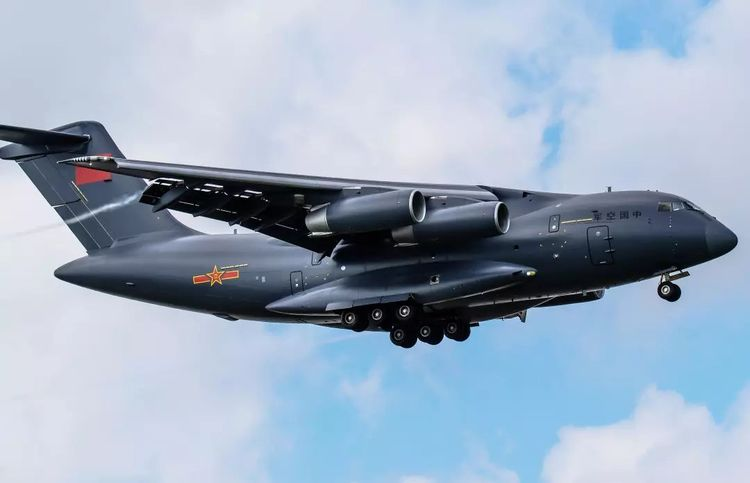

C919 large passenger aircraft, the full name of COMAC C919, C is the first letter of China, the meaning of 9 is forever, 19 represents the maximum passenger capacity of 190.
At 14:00 on May 5th, 2017, China's self-developed jet-type passenger aircraft C919 with complete independent intellectual property rights jumped up and down the fourth runway of Shanghai Pudong International Airport; after 79 minutes, the aircraft landed steadily, first The aircraft chief and the chief designer of the aircraft clung to each other, and the crowd at the scene gave a deafening cheer. The C919's first blue sky trip, a short flight, is the most important record in the history of China's century-old aviation industry. It is a century of Chinese nation. The historical breakthrough of the "big airplane dream" - when the "sky" blue and the "earth" green painted C919 stretched the wings at a height of 3,000 meters, there was a large one in China that was completely developed according to the world's advanced standards. airliner. The C919 large passenger aircraft is China's first single-channel trunk aircraft developed in full accordance with international airworthiness standards and mainstream market standards. According to Wu Guanghui, chief designer of C919, C919 is positioned in the most mainstream 150-seat single-channel market in the air transportation market. The basic mixed-level layout is 158, with 168 full-featured layouts, a standard range of 4,075 kilometers, and an increased range of 5,555. Kilometers; with advanced aerodynamic layout, structural materials and airborne systems, direct operating costs are reduced by 10%. Before the first flight, the C919 large passenger aircraft had received 570 orders from 23 customers at home and abroad. The emergence of the C919 means that China has the core competence to develop a modern trunk aircraft. The R&D and manufacturing capabilities of large passenger aircraft are an important indicator of a country's aviation level and an important indicator of a country's overall strength. The civil aircraft industry with a very high degree of global cooperation needs to firmly grasp independent innovation and core competitiveness. The first flight of the C919 is not only the take-off of an aircraft, but also the success of the development of an aircraft model. It is also the take-off of China's aviation industry and civil aircraft industry. China has thus achieved a breakthrough in civil aircraft technology and formed a large passenger aircraft. Develop core competencies. Wu Guanghui said that the development of the C919 aircraft adheres to the development path of ¡°China's design, system integration, global bidding, and gradually upgrading localization¡±, and the technical route of ¡°independent research, international cooperation, and international standards¡±, which has overcome the design of integrated aircraft and engines. More than 100 core technologies and key technologies such as control laws and active control technologies of telex flight control systems have been built to serve the platform of China Commercial Aircraft Corporation, including design and development, final assembly manufacturing, customer service, airworthiness and forensics, supplier management, and market. China¡¯s civil aircraft developed its core competence, including marketing, and formed a civil aircraft industry chain with Shanghai as the leader, 22 provinces and cities including Shaanxi, Sichuan, Jiangxi, Liaoning and Jiangsu, more than 200 enterprises and nearly 200,000 people. Improve the supporting energy level of China's aviation industry. A relatively complete industrial chain with independent innovation capability and independent intellectual property rights, with China Commercial Aircraft as the core, combined with AVIC, radiating the whole country and facing the world, is forming. A road of innovation and development with Chinese civil aircraft industry characteristics is on the way. Front extension.
Technical characteristics
The first self-designed supercritical wing reached the world advanced level The C919's wing design uses a supercritical wing. Compared with the traditional wing, the supercritical wing can increase the cruise aerodynamic efficiency of the aircraft by more than 20%, which in turn increases the cruising speed by nearly 100 km/h. If traditional wing and supercritical wings are designed with the same thickness standard, the overall resistance of the supercritical wing is about 8% smaller than that of the conventional wing.
The use of supercritical wings can also reduce the structural weight of the aircraft, increase the structural space and fuel volume.
Advanced materials for the first time in large-scale application of domestic civil aircraft C919 uses advanced materials such as aluminum-lithium alloys and composite materials to achieve the goal of reducing weight and increasing service life. The third-generation aluminum-lithium alloy material of C919 reached 8.8%, and the advanced composite material used reached 12%.
C919 is equipped with advanced airborne systems and engines The C919 uses advanced airborne systems and engines, such as a highly modular and integrated avionics system, an all-digital fly-by-wire flight control system with covered wire protection, and the new LEAP-1C high bypass ratio engine is integrated. The system design method is promoted and the economic performance is better.
Related person
Wu Guanghui Aircraft design expert. A member of the Communist Party of China in Wuhan, Hubei Province. In 1982, he graduated from Nanjing Aeronautical Institute with a major in aircraft design. In 2009, he obtained a doctorate in engineering from Beijing University of Aeronautics and Astronautics. He used to be the chief designer of the National Key Project Air Police 2000 (aircraft) and ARJ21 aircraft. He is currently the deputy general manager of China Commercial Aircraft Co., Ltd. and the chief designer of the national major special C919 large passenger aircraft.In 2017, he was elected academician of the Chinese Academy of Engineering.
Related hotspot
-
